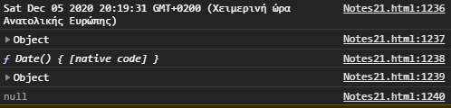
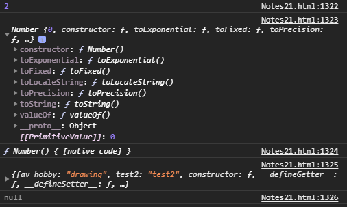

Home Pages:
Informations included in this page:
Objects can be Extensible, Frozen or Sealed
Immediately Invoked Function Expressions
Objects can be Extensible, Frozen or Sealed
Immediately Invoked Function Expressions
Getters and setters were introduced in ES5 and they allow you to difine object accessors (Computed Properties).
To use them you should either add the get or set keyword infront of a property, let's create an example of a getter first:
JavaScript
let obj = { language: "Greek", get lang(){ return `The language is ${this.language}`; } } document.write(obj.lang);
Outcome:
As you can see, it works similarly to methods, however, with a normal method you have to write obj.lang() to call it, with the get keyword infront you can simple write obj.lang.
Here is an example of a setter now:
JavaScript Code:
let obj = { language: "", set lang(x){ this.language = `The language is ${x}`; } } obj.lang = "Greek"; document.write(obj.language);
Outcome:
As you can see, we used the set keyword infront a method with a parameter we named x, now, whatever value is assigned to lang property will be passed to x parameter and then the method will return that value to the wanted property. If we had used a normal method for this we would have to write obj.lang("Greek"), while now we can just write obj.lang = "Greek".
Why use getters and setters? They give simpler syntax, they allow equal syntax for properties and methods, they can secure better data quality and they also are useful when you want to do things behind-the-scenes.
What's property descriptors? You could think of them as like extra informations about properties inside an object, informations such as what's the value of the property, can the value be changed, etc.
So, as you can see, we categorize the property descriptors in two groups, the Data Descriptors and accessor descriptors, you cannot merge the two groups with each other, if you use set for example then you can't use value or writeable since they don't belong in the same group.
So, before we start experimenting with these, let's talk about how we can use them first, there are some property descriptors methods we can use to interact with them, here I have a list for you:
JavaScript Code:
let obj = {name: "Alex", age: 16}; Object.defineProperty(obj, 'age', { enumerable: false }); Object.defineProperties(obj, { 'age': { writable: false }, 'name': { writable: false } }); console.log(Object.getOwnPropertyDescriptor(obj, 'age')); console.log(Object.getOwnPropertyDescriptors(obj));
Outcome:
So, in the example above I demonstrated how the first four methods are used. As you can see, the property names should be written as strings, if you added a new name that doesn't exist in the object it would simple create a new property with that name. Also, another thing you may have noticed is that the syntax of the defineProperties() method is a little weird, you got to get used to it, the syntax goes like this: defineProperties(obj, {property1:{...}, property2:{...}, etc})
Now, let's talk about the property descriptors, lets start by first learning what data descriptors do. value sets a value to the property, writeable takes a boolean value, if false then the property cannot be changed with assignment operator.
Enumerable also takes true or false as it's value, if false then the property doesn't show up during enumeration of the properties, if for example we used for...in loop to loop through the properties of the object the property would be ignored, same goes for methods such as Object.keys and Object.values which create an array of the object's keys or values, if a property's enumerable is set to false the property will be ignored.
Lastly, configurable also takes a boolean value, if true then the descriptors of the property can be changed and the property can be deleted from the corresponding object.
JavaScript Code:
let obj1 = {name: "Alex", age: 15};
Object.defineProperty(obj1, 'hobbies', {
value: "
programming",
writeable: false,
enumerable: false,
configurable: false
});
document.write(obj1.hobbies);
obj1.hobbies = "music";
document.write(obj1.hobbies);
delete obj1.hobbies
document.write(obj1.hobbies);
Object.defineProperty(obj1, 'hobbies', {
value: "art"
});
document.write(obj1.hobbies);
Outcome:
As you can see, rewriting the property with assignment operator did not work (because writable: false), deleting did not work (because configurable: false), and at the end, when I tried to change the value descriptor an error appeared and code block stopped (because configurable: false), here is the error I got:
Let's try to check if the hobbies property is enumerable or not now:
JavaScript Code:
for(let i in obj1){ document.write(i + "<br>") } let arr1 = Object.keys(obj1); let arr2 = Object.values(obj1); document.write(arr1 + "<br>" + arr2); document.write("<br>" + obj1.hobbies);
Outcome:
Let's talk about the accessor descriptors now, everything stays the same with data descriptors, except get and set that replace the value and writable descriptors.
So, accessor descriptors are basically used for getters and setters, let's try creating a getter using Object.defineProperty() method:
JavaScript
let obj = { language: "Greek" } Object.defineProperty(obj, 'lang', { get: function(){ return `The language is ${this.language}`; } }); document.write(obj.lang);
Outcome:
Now let's create a setter using Object.defineProperty() method:
JavaScript Code:
let obj = { language: "" } Object.defineProperty(obj, 'lang', { set: function(x){ this.language = `The language is ${x}`; } }); obj.lang = "Greek"; document.write(obj.language);
Outcome:
Alright, lastly, before we finish with this section I want to talk about two more methods that exist, the obj,propertyIsEnumerable(prop) and obj.hasOwnProperty(prop), here is a quick demonstration of what they do:
JavaScript Code:
let obj = {name: "Alex", age: 16}; document.write(`${obj.propertyIsEnumerable('name')} <br> ${obj.hasOwnProperty('age')} `)
Outcome:
As you can probably guess, propertyIsEnumerable checks if a property of an object is enumerable or not, and hasOwnProperty checks if an object has a property or not.
So, in the section above we talked about property descriptors which let is define if a property can be writable, configurable, etc, now let's talk about the object it self.
There are three states an object can be in:
Alright, so, before we start playing around with these three states to understand them better, we are gonna need to learn the following methods:
JavaScript Code:
let obj1 = {name: "Alex", age: 16}; let obj2 = {name: "Christina", age: 18}; let obj3 = {name: "Jonathan", age: 17}; Object.preventExtensions(obj1); Object.seal(obj2); Object.freeze(obj3); // Experimenting with object that prevents extensions obj1.__proto__.fav_hobby = "drawing"; // adds property to prototype obj1.fav_food = "pizza"; // adds property to object document.write(`${obj1.fav_hobby}, ${obj1.fav_food} <br>`); // Experimenting with sealed object try{ Object.defineProperty(obj2, 'name', { enumerable: false }); // tries to edit the enumerable property descriptor } catch { document.write("Cannot redefine enumerable because object is sealed.") } // only value can be changed so it didn't work obj2.age = 17; // changes the value of age property document.write(`<br> ${obj2.name}, ${obj2.propertyIsEnumerable('name')}, ${obj2.fav_hobby}`) // Experimenting with frozen object obj3.name = "Karak10" // tries to change the name of the property let example = {test: "test"}; // creates an object to use as a prototype later try{ Object.setPrototypeOf(obj3, example); // sets example to be the prototype of obj3 } catch { document.write("<br> Cannot change the prototype because object is frozen") } // didn't work because object is frozen obj3.__proto__.test2 = "test2"; // adds a new property to the prototype of obj3 delete obj3.age; // tries to delete age property of object document.write(`<br> ${obj3.name}, ${obj3.test}, ${obj3.test2}, ${obj3.age}`) // Checking what each object is document.write(`<br> ${Object.isExtensible(obj1)}, ${Object.isExtensible(obj2)}, \ ${Object.isExtensible(obj3)}, ${Object.isSealed(obj2)}, ${Object.isFrozen(obj3)}`);
Outcome:
I hope my examples helped, I explain more about what prototype is in the section below.
Prototype is basically a property of a JavaScript function. At each time we create a function in JavaScript, JavaScript engine adds an extra property called prototype to the created function.
This prototype property points to an object (called as prototype object) and has a constructor property by default. This constructor property points back to the function object on which the prototype is a property. The following image illustrates what I described above:
We can access the function's prototype using the syntax functionName.prototype, and then from the function's prototype object we can go back to our function by functionName.prototype.constructor. Let's now write a few codes to confirm that what I'm saying is actually true, and that function's prototype object truly exists.
JavaScript Code:
function human(n,a){ this.name = n; this.age = a; } console.log(human.prototype); console.log(human.prototype.constructor);
Outcome:
Alright, so, now, let's try to use a function object constructor to create an object and see what the prototype chain will be like:
JavaScript Code:
let Person = function(n,a){ this.name = n; this.age = a; } let Alex = new Person("Alex", 15); console.log(Alex.__proto__); console.log(Alex.__proto__.__proto__); console.log(Alex.__proto__.__proto__.__proto__); console.log(Alex.__proto__ === Person.prototype);
Outcome:
As you can see, a property called __proto__ is automatically added to the object which connects the object with the function's prototype, if you continue climbing the chain you will eventually reach null, the top of the chain.
Alright, so, if I had made an normal object, how would it be tied in the prototype chain without a constructor? Well, normal objects do have a constructor too, a built in one, this object: let person = {name: "alex"} could also be made like this: let person = new Object(); person.name = "alex";, does this remind you something? It's just like as we use a constructor, because we do use a constructor, the built in constructor called Object().
JavaScript Code:
let obj = {name: "Alex", age: 15}; let obj2 = {name: "Christina", age: 18}; console.log(obj.__proto__); console.log(obj.__proto__.constructor); console.log(obj.__proto__.__proto__); console.log(obj.__proto__.constructor === obj2.__proto__.constructor);
Outcome:
Here is an image I made displaying the prototype tree so far:
So, why should we care about the prototype tree? How is it helpful? When you search for a property inside an object but it isn't found, JavaScript searches for the property inside the prototype. You probably have used methods like toString, valueOf, etc before, you never added these methods in your Object, because they already existed inside the Object Prototype, that's why you were able to use them.
Inside the Object Prototype there also is a method called setPrototypeOf() which you can use to set a prototype to an object, if for example you wanted some properties to be used in multiple objects and you didn't want to redefine them over and over again for every single object you could do something like this:
JavaScript Code:
let person1 = { skin_color: "white", sexuality: "straight" } let person2 = { name: "Alex", age: 16 } // this makes person1 the prototype of person2 Object.setPrototypeOf(person2, person1); console.log(person2); console.log(person2.__proto__); console.log(person2.__proto__.__proto__);
Outcome:
According to w3school however, the setPrototypeOf() method should be avoided at the moment, because it has bad effect to the website speed, I don't know much details about why, but it does recommend us to use Object.create() instead.
JavaScript Code:
let person1 ={ skin_color: "white", sexuality: "straight" } // uses person1 as prototype, second parameter // should contain the properties and property // descriptors like below or else it won't work let person2 = Object.create(person1, { name: { value: "Alex" }, age: { value: 16 } }); document.write(`Hello, I'm ${person2.name} and I'm ${person2.sexuality}.`);
Outcome:
Other built-in Objects such as Array, Date, Function, Map, Set, etc also have an associated prototype and those have all additional methods which are specific to that type.
For an instane, if we create a simple number array, the default new Array() constructor functions get invoked internally, from the behind the scene by the JavaScript engine, I talked about how arrays are objects with built in iterators in previous lessons. Anyway, JavaScript wil add a __proto__ pointer to newly created array instance which points to Array.prototype object which has all the methods relevant to the Array operations such as concat, reduce, map, forEach, etc.
JavaScript Code:
let arr = [1,2,3,4]; console.log(arr); console.log(arr.__proto__); console.log(arr.__proto__.constructor); console.log(arr.__proto__.constructor.prototype === arr.__proto__) console.log(arr.__proto__.__proto__); console.log(arr.__proto__.__proto__.__proto__)
Outcome:

If you take a look inside the constructor, you will see its filled with array methods you can use, the built in iterator is there too, here is a picture of what's inside:
Here is a visual image of the Array prototype tree to understand it better, as we can see, Arrays are connected to the Object Prototype too.
Let's check a map object now, just like Arrays, it has a built-in constructor with properties for it's type, the methods we learned when we learned to use Map object in previous lessons:
JavaScript Code:
let map = new Map([["k1", "v1"], ["k2", "v2"]]); console.log(map); console.log(map.__proto__); console.log(map.__proto__.constructor); console.log(map.__proto__.__proto__); console.log(map.__proto__.__proto__.__proto__);
Outcome:
Let's now try to create a set object and check it's prototype chain:
JavaScript Code:
let set = new Set([1,1,2,2,3,3]); console.log(set); console.log(set.__proto__); console.log(set.__proto__.constructor); console.log(set.__proto__.__proto__); console.log(set.__proto__.__proto__.__proto__);
Outcome:
Let's check to see what the prototype chain of an arrow function is, it's different than normal functions, and that's why this keyword is treated differently in arrow functions:
JavaScript Code:
let example2 = () => { document.write("Hello World!"); } console.log(example2); console.log(example2.__proto__); console.log(example2.__proto__.constructor); console.log(example2.__proto__.__proto__); console.log(example2.__proto__.__proto__.__proto__);
Outcome:
Let's create a date object now, it's prototype chain, just like the others, contains a constructor that has methods and other stuff inside, and of course it is connected to the object prototype:
JavaScript Code:
let date = new Date(); console.log(date); console.log(date.__proto__); console.log(date.__proto__.constructor); console.log(date.__proto__.__proto__); console.log(date.__proto__.__proto__.__proto__);
Outcome:
The Math Object is a built-in object, you don't create it like Date, Map and Set, it shares the same constructor with normal objects, the Object() built-in function, and it's __proto__ is directly the Object Prototype, just like normal objects. The Math Object methods are directly inside the Math Object too.
JavaScript Code:
console.log(Math); console.log(Math.__proto__); console.log(Math.__proto__.constructor); console.log(Math.__proto__.__proto__);
Outcome:
Numbers, Strings, Booleans and Symbols also belong to the Object Prototype, that's why strings can be iterated for example, or why numbers can be converted to string with toString() method, etc. Let's create a number and check it's prototype chain:
JavaScript Code:
let a = 2; console.log(a); console.log(a.__proto__); console.log(a.__proto__.constructor); console.log(a.__proto__.__proto__); console.log(a.__proto__.__proto__.__proto__);
Outcome:
Let's check a string now, which as we know shares many methods with Array's constructor, I will not show them in the picture however, because they are too many to fit, but you can always go check these out by your self:
JavaScript Code:
let a = "Hello World!"; console.log(a); console.log(a.__proto__); console.log(a.__proto__.constructor); console.log(a.__proto__.__proto__); console.log(a.__proto__.__proto__.__proto__);
Outcome:
Let's investigate the prototype tree of a boolean value now
JavaScript Code:
let a = true; console.log(a); console.log(a.__proto__); console.log(a.__proto__.constructor); console.log(a.__proto__.__proto__); console.log(a.__proto__.__proto__.__proto__);
Outcome:
And lastly, a Symbol:
JavaScript Code:
let a = Symbol(); console.log(a); console.log(a.__proto__); console.log(a.__proto__.constructor); console.log(a.__proto__.__proto__); console.log(a.__proto__.__proto__.__proto__);
Outcome:
Promises, just like set, date, map and other objects can be created using the new keyword, so as we can expect, it has a Promise() constructor, which Promise() constructor also has a prototype object, let's check and confirm this:
JavaScript Code:
let example = new Promise((resolve, reject) => { resolve("Hello World!"); }); example.then((x) => { document.write(x); }) console.log(example); console.log(example.__proto__); console.log(example.__proto__.constructor); console.log(example.__proto__.__proto__); console.log(example.__proto__.__proto__.__proto__);
Outcome:
Alright, so, I want to talk more about functions now, functions are created just like arrow functions, their prototype tree is the same:
JavaScript Code:
let a = function myFunction(){ document.write("hello"); }; console.log(a); console.log(a.__proto__); console.log(a.__proto__.constructor); console.log(a.__proto__.__proto__); console.log(a.__proto__.__proto__.__proto__);
Outcome:
The difference between arrow functions and normal functions, and the reason normal functions can become constructors is because as I said at the beginning of the section, when a normal function is created, a property is assigned to it, named prototype, so the function prototype chain looks like this:
So, window and document are a little more complex, they have a bigger prototype chain, but that had to be expected, console has a smaller one, let's check these out:
JavaScript Code:
console.log(window); console.log(window.__proto__); console.log(window.__proto__.constructor); console.log(window.__proto__.__proto__); console.log(window.__proto__.__proto__.__proto__); console.log(window.__proto__.__proto__.__proto__.__proto__); console.log(window.__proto__.__proto__.__proto__.__proto__.__proto__);
Outcome:

JavaScript Code:
console.log(document); console.log(document.__proto__); console.log(document.__proto__.constructor); console.log(document.__proto__.__proto__); console.log(document.__proto__.__proto__.__proto__); console.log(document.__proto__.__proto__.__proto__.__proto__); console.log(document.__proto__.__proto__.__proto__.__proto__.__proto__); console.log(document.__proto__.__proto__.__proto__.__proto__.__proto__.__proto__);
Outcome:

JavaScript Code:
console.log(console); console.log(console.__proto__); console.log(console.__proto__.__proto__); console.log(console.__proto__.__proto__.__proto__);
Outcome:

Let's now talk about classes, they work similarly to object constructors, so let's see what their prototype chain looks like:
JavaScript Code:
let human = class{ constructor(n,a){ this.name = n; this.age = a; } } let person = new human("Alex", 16); console.log(human); console.log(human.__proto__); console.log(human.__proto__.constructor); console.log(human.__proto__.__proto__); console.log(human.__proto__.__proto__.__proto__); let fun = function(){}; let fun2 = () => {}; console.log(fun.__proto__ === human.__proto__ && human.__proto__ === fun2.__proto__);
Outcome:
As you can see, classes, functions and arrow functions all share the same prototype chain, however, both normal functions and classes can be constructors, while arrow functions can't, that's because for both classes and normal functions, when they are created, a prototype object gets created for them, which connects every object created by them to the Prototype Object:
JavaScript Code:
let human = class{ constructor(n,a){ this.name = n; this.age = a; } } let person = new human("Alex", 16); console.log(person); console.log(person.__proto__); console.log(person.__proto__.constructor); console.log(person.__proto__.__proto__); console.log(person.__proto__.__proto__.__proto__);
Outcome:
As you can see, classes and function constructors are pretty similar, here is a diagram of how a class's prototype chain looks like, compare it to the image I added above when I talked about functions, the only change is that now I'm using a class instead of a function, everything else stays the same:
Now, there are some more differences between classes and functions I want to talk about, for example, when you create a method inside a class, there are two differen kind of methods you can create, as I explained in the classes lesson, the prototype methods and the static methods. A prototype method is added to class's prototype object, it is not directly added to the objects like when you create objects using function constructors, Static methods can be called through the class instance only, they are not added inside the class's prototype object or the objects them selves, they stay static inside the class and can only be called through the class.
JavaScript Code:
let human = class{ constructor(n,a){ this.name = n; this.age = a; } speak(){ return "Hello"; } static test(){ return "test"; } } let obj = new human("Alex", 16); console.log(obj); console.log(obj.__proto__); console.log(obj.__proto__.constructor);
Outcome:

Now, to finish with classes, let's talk about what happens when a class extends another class:
JavaScript Code:
let animal = class{ constructor(n,a){ this.name = n; this.age = a; } die(){ return "The animal has died"; } } let dog = class extends animal{ constructor(n, a, c){ super(n, a); this.color = c; } } let rex = new dog("Rex", 4, "white"); console.log(rex); console.log(rex.__proto__); console.log(rex.__proto__.constructor); console.log(rex.__proto__.__proto__); console.log(rex.__proto__.__proto__.constructor); console.log(rex.__proto__.__proto__.__proto__); console.log(rex.__proto__.__proto__.__proto__.__proto__);
Outcome:

The dog class's prototype object becomes child of the animal class's prototype object, so the methods of animal class can be accessed through dog class too, but the properties should be added using the super() method, as I have explained in classes lesson. Here is an image of how the prototype chain looks like when a class extends another class.

By specification, all built-in Objects in JavaScript have prototype Object associated with them and they point to the Object.prototype object. That is why many people say "Everything in JavaScript is inheriting from Object".
The values null and undefined have no object wrappers. Those will stand apart as special values in JavaScript when it comes to primitives. Since they do not have object wrappers, simply they will not have additional methods and properties for them and also they don't have any associated prototype object too.
Here is a bigger picture of the Prototype Chain:
To make this section I used help from this article: click here
Here are some videos that I found useful:
So, in this section we are gonna talk a little bit more about classes, I already talked about the prototype chain in the previous section, in this one I will talk more about what the class syntax actually does, because classes are functions after all, so what exactly does super() do? What does extends keyword do? To better undrestand this, we are gonna try and create a class using a normal function.
Alright, so, firstly, let's create a class:
JavaScript Code:
let animal = class{ constructor(n, a){ this.name = n; this.age = a; } kill(){ return "The animal died"; } } let dog = class extends animal{ constructor(n, a, c){ super(n, a); this.color = c; } } let my_dog = new dog("Bella", 2, "brown");
Now, let's try to remake the exact same thing, without the class syntax:
JavaScript Code:
let animal = function(n, a){ this.name = n; this.age = a; } animal.prototype.kill = function(){ return "died"; } // adds the method to the function's prototype object just like in classes let dog = function(n, a, c){ animal.call(this, n, a); // basically does what super() does for classes this.color = c; } Object.setPrototypeOf(dog.prototype, animal.prototype) // does what extends keyword does for classes let my_dog = new dog("Bella", 2, "brown"); // testing to see if everything works correctly document.write(`I once had a dog, her name was ${my_dog.name}, her color was ${my_dog.color} and she was ${my_dog.age} years old, sadly, a really bad person poisoned her and she ${my_dog.kill()}.`)
Outcome:
IIFE are functions that immediately are executed without being called, here is an example:
JavaScript Code:
(function example(x){ document.write(x); })("Hello World!");
Outcome:
So, the syntax may look weird at first, but it's not really that weird, if you understand what it does, normally, to call the function we would write example("Hello World!");, what's example? It references the function, but because it has ("Hello World!"); next to it, the function gets executed, if you haven't noticed already, the syntax above is basically the same thing, it's our function with ("Hello World!"); next to it.
So what's the point of creating a function that immediately executes? IIFE get used commonly to create closures, namespaces, to set up objects as part of the loading of an app/page, and to protect the values that are inside the function when it runs.
We are gonna get to use IIFE again in the section below to fix a closure problem.
In this section we are going to talk about scoping rules, as we know already, variables made with the keyword var are scoped to the immediate function body (henche the function scope) while let variables are scoped to the immediate enclosing block denoted by { } (henche the block scope). Here is an example to confirm what I just said is true:
JavaScript Code:
function example10(){ var name69 = "Alex"; let age = 16; } if(true){ var color = "white"; let idk69 = "Hello!" } try{document.write(name69)} catch{ document.write("name69 could not be found <br>")} try{document.write(age)} catch{ document.write("age could not be found <br>")} try{document.write(color + "<br>")} catch{ document.write("color could not be found")} try{document.write(idk69)} catch{ document.write("idk69 could not be found")}
Outcome:
In JavaScript, there is something called lexical scoping which means, variables that are defined outside a scope can be accessed from the inside scope, a variety made inside the global function scope for example could be accessed inside another function, let's have an example:
JavaScript Code:
let var1 = "value1"; let fun1 = function(){ document.write(var1); } fun1(); if(true){ document.write(var1); }
Outcome:
So, if we put a function inside a codeblock that contains a variable made with let keyword, and we tell the function to return that variable but we call the function from outside the block scope it shouldn't work, right? Well, let's find out:
JavaScript Code:
if(true){ let i = "variable"; var example11 = function(){ document.write(i); } } example11();
Outcome:
It works! Why though? Well, that's because when example11() was read, JavaScript looked back where example11 function was made and executed the function there, it's the place it originally was made in that matters, not the position you call it, here is an example that confirms it:
JavaScript Code:
if(true){ function example12(){ document.write(i); } if(true){ let i = "variable"; try {example12()} catch {document.write("i was not found")}; } }
Outcome:
So, now that we remembered some basic scoping rules, let's talk about closures, see the example below:
JavaScript Code:
let example = () => { let item = "Variable"; return () => { document.write(item); } } example()();
Outcome:
So, this time, we called example() function, which returned an anonymous function outside the function scope, the difference with before is that now we have a function that contains a variable and returns another function, as expected it will work just like before, but for different reasons:
Using console.dir() we can investigate more, console.dir() is similar to console.log() but contains extra informations like the scope and others:
JavaScript Code:
if(true){ let item = "variable1" var example13 = () =>{ document.write(item); } } example13(); let example = () => { let item = "variable2"; return () => { document.write(item); } } example()(); console.dir(example13); console.dir(example());
Outcome:
Let's try to add more variable now and see how will they be effected by this:
JavaScript Code:
let item = "variable1" let food = "pizza"; let color = "white"; var example13 = () =>{ document.write(item, food); } } let example = () => { let food = "pizza"; let color = "white"; let item = "variable2"; return () => { document.write(item, color); } } console.dir(example13); console.dir(example());
Outcome:
As you can see, only the variables that are used inside the function are saved in block or closure (we get block when the function is inside a code block, and closure when it is inside a function).
Let's play around with it to get confortable with how lexical scoping creates those blocks and closures, what if a function had a closure and a block together?
JavaScript Code:
if(true){ let food = "pizza"; var example = () => { let item = "variable2"; return () => { document.write(item, food); } } } console.dir(example());
Outcome:

As you can see, JavaScript creates those scoping layers, first we have the global scope, then inside it we have a code block and then we have a closure, as I said before, only if the function uses a variable inside the code block it will be added in the scopes, if it did not then we would only see global and closures in the console.
So, let's take a look the the code below, one that is commonly used in interviews, it's a tricky on, and you are gonna learn why soon:
JavaScript Code:
for(var i = 0; i<3; i++){ setTimeout(() => { console.log(i); }, 1000); }
This will output 3 3 3, and the reason that happens, as we will confirm in the code below, is because the for loop is finished before the setTimeouts are done waiting:
JavaScript Code:
for(var i = 0; i<3; i++){ setTimeout(() => { console.log(i); }, 1000); console.log("Loop is done"); }
Outcome:
That's not the tricky part of the question though, what really is weird at first, is that if instead of var you write let, instead of writing 3 3 3 it will for some reason write 0 1 2:
In order to understand this, we should compare the two, and understand what each does behind the scenes:
JavaScript Code:
for(var i = 0; i<3; i++){ setTimeout(() => { console.log(i); console.dir(() => console.log(i)) }, 1000); console.log("loop1 ended"); }
Outcome:
As expected, the iteration has created a variable called i which can be accesed from the global scope, since it was made with var and it's not restricted inside the block. Let's see what happens for let now:
So, because let restricts the variable to it's code block that's why we see i inside Block, what's really interesting however is that each time the function ran, i was different, even though the functions ran after the loop had finished and i should had already increased, so why does it increase by one for each time the function runs?
Alright, so after a lot of research, I think I have understood what exactly happens behind the scenes when you are using loops, now, my demonstration is probably not 100% true, but I believe it's pretty near, and it will do help you understand what kind of happens.
So, to understand what happens, I tried to rewrite the loop syntax into a handwritten one, here is how I would create the loop using the var keyword:
JavaScript Code:
/* The following loop: for(var x = 0; x<3; x++){ setTimeout(() => console.log(x), 4000); } Can be handwritten to this: */ { // loop code block var x = 0; // does what first parameter of the for loop does let temp = x; // I use this to make a copy of x on each loop block { // first loop var x = temp; if(x<3){ // it does what second parameter of loop does for each block setTimeout(() => console.log(x), 3000); } } { // second loop temp++ // the last parameter of the loop increases x starting from second loop var x = temp; if(x<3){ setTimeout(() => console.log(x), 3000); } } { // third loop temp++ var x = temp; if(x<3){ setTimeout(() => console.log(x), 3000); } } { // fourth loop temp++ var x = temp; if(x<3){ // returns false, but x has already been increased to 3 setTimeout(() => console.log(x), 3000); } } }
Outcome:
So, because var is not restricted to the code block, every loop was rewriting the original, if we used let however, each code block would create a different variable:
JavaScript Code:
/* The following loop: for(let x = 0; x<3; x++){ setTimeout(() => console.log(x), 4000); } Can be handwritten to this: */ { // loop code block let x = 0; // does what first parameter of the for loop does let temp = x; // I use this to make a copy of x on each loop block { // first loop let x = temp; if(x<3){ // it does what second parameter of loop does for each block setTimeout(() => console.log(x), 3000); } } { // second loop temp++ // the last parameter of the loop increases x starting from second loop let x = temp; if(x<3){ setTimeout(() => console.log(x), 3000); } } { // third loop temp++ let x = temp; if(x<3){ setTimeout(() => console.log(x), 3000); } } { // fourth loop temp++ let x = temp; if(x<3){ // returns false, but x has already been increased to 3 setTimeout(() => console.log(x), 3000); } } }
Outcome:
So, as I explained before, since the variables that are created in each loop are restricted to their loop code block, they will be new variables and not rewrite the previous ones, as a result, each loop logs another number when the timeouts are over.
So, if we used an already declared variable as the first parameter, then we could simple move the let x = 0 from the top of the loop block and place it outside, and then simple remove any let, since the first parameter of the loop is x, each loop will do x++, also, temp is not needed for this case since we aren't copying x like before, I needed temp because doing x = x wouldn't work.
JavaScript Code:
/* The following loop: let x = 0; for(x; x<3; x++){ setTimeout(() => console.log(x), 4000); } Can be handwritten to this: */ { // loop code block { // first loop if(x<3){ // it does what second parameter of loop does for each block setTimeout(() => console.log(x), 3000); } } { // second loop x++ // the last parameter of the loop increases x starting from second loop if(x<3){ setTimeout(() => console.log(x), 3000); } } { // third loop x++ if(x<3){ setTimeout(() => console.log(x), 3000); } } { // fourth loop x++ if(x<3){ // returns false, but x has already been increased to 3 setTimeout(() => console.log(x), 3000); } } }
Outcome:
So, if we wanted to make the loop using var for some reason, but we also wanted it to log the numbers one by one like it does when we use let, we could do this like this:
JavaScript Code:
for(var item0 = 0; item0<3; item0++){ (function(x){ setTimeout(() => console.log(x), 6000); })(item0); }
Outcome:
Let's try to understand what exactly happens to our code now, by simply taking this handwritten code I used before, and adding the body of the loop inside every if() statement:
JavaScript Code:
{ // loop code block var item1 = 0; let temp = item1; { // first loop var item1 = temp; if(item1<3){ // added the second parameter in each block seperately (function(x){ setTimeout(() => console.log(x), 6000); })(item1); } } { // second loop temp++ // the last parameter of the loop increases x starting from second loop var item1 = temp; if(item1<3){ (function(x){ setTimeout(() => console.log(x), 6000); })(item1); } } { // third loop temp++ var item1 = temp; if(item1<3){ (function(x){ setTimeout(() => console.log(x), 6000); })(item1); } } { // fourth loop temp++ var item1 = temp; if(item1<3){ // returns false, but x has already been increased to 3 (function(x){ setTimeout(() => console.log(x), 6000); })(item1); } } }
As you can see, we have a function inside another, so a closure is created, when the function runs first time item1 is 0, it may change later, but since the function was called before it changes, the x parameter was assigned to be 0, and the closure of () => console.log() function is x = 0.
Let's talk about function currying now, it's not very hard to understand, it's called function currying because it's like one function curries another, and you will understand what I mean soon, first of all, let's take a look to the code below:
JavaScript Code:
let greet = (a, b) => { document.write(`${a} ${b}`); } greet("Hello", "Alex");
Outcome:
Alright, so, I now want to make the code above so that I can greet users in different languages, let's say I don't have the usernames avaible yet, and I don't want to create a different function for each language, there are of course many alternative ways to do this, like everything in JavaScript in general, but since we are learning about function currying let's try to make what I want using functiogn currying:
JavaScript Code:
let greet = (a) => { return(b) => { document.write(`${a} ${b} <br>`); } } let english = greet("Hello"); let svenska = greet("Hej"); let espanol = greet("Hola"); let deutsch = greet("Tag"); english("Alex"); svenska("Christina"); espanol("Jonathan"); deutsch("Monika");
Outcome:
So that's what we call function currying, the greet function returned another function, and since it's a function inside another and uses parameter a it also created a closure of a's value, then we used the returned function to do the greeting by only having to add the b parameter of the returned function.
Lately I have start to realized how useful the console can be, using it can help a lot when you have a problem and want to understand what exactly happens behind the scenes, because of that, in this section I will speak about some console log methods you can use. Here is a list of the methods I'm gonna talk about in this section:
Console.table is pretty cool because it creates a table of the information you pass into it, you may not need it now, but when working with big objects this can be pretty helpful:
JavaScript Code:
let obj = { prop1: ["bob", "29", "white"], prop2: ["jacob", "25", "black"], prop3: ["Christina", "18", "white"], prop4: ["Alex", "16", "white"] } console.table(obj); console.table(obj.prop3);
Outcome:

Console.trace is also one of the most useful console methods out there in my opinion, what does it do? If you call a function which function calls other functions it keeps track of the path of functions that were called in order, and returns them in an ordered list, that's very helpful, because as we have seen already working with functions can become pretty complex, when you start nesting them, using function call backs, function currying, etc, by using console.trace you could save your self a lot of time when working with functions.
JavaScript Code:
let obj = { f1(){ obj.f2(); }, f2(){ obj.f3(); }, f3(){ obj.f4(); }, f4(){ console.trace("Hello World!"); } } obj.f1();
Outcome:

Console.dir works pretty similar to console.log, I already used it in the sections above so I won't put any examples here, from what I understand console.log stringifies some of the methods inside the objects so basically, console.dir gives you more information about what's in the object.
To finish, the last three methods are basically decoration methods, the console.info from what I read has a litttle i next to the log or something, but in my browser it does not.
JavaScript Code
console.error("This is an error log"); console.warn("This is a warn log"); console.info("This is an info log");
Outcome:

The array.pop() methods removes the last element of an array and returns that element, the array.shift() does the same but it removes the first element of the array instead, here is an example:
JavaScript Code:
let arr = [1,2,3,4,5,6]; document.write(`${arr.shift()} and ${arr.pop()} were removed \ from the array, now the first element is ${arr[0]} and the last is \ ${arr[3]}, the array also is left with only ${arr.length} elements.`)
Outcome:
The find() method returns the value of the first element in the provided array that passes a provided testing function. If no values satisfies the testing function then undefined is returned.
JavaScript Code:
let arr = [1, 2, 3, 4, 5, 6]; let foundElement = arr.find(x => x>2); document.write(foundElement);
Outcome:
This method's function can actually take three parameters, the first parameter as we saw above defines the value, the second parameter defined the index number and lastly the third parameter defines the array it self.
Lastly, there can be a second parameter to the find() method, the first as you already know is a function, the second parameter defines an object to use as this inside the function, this will only work however if you are using a normal functions, since this in arrow functions is lexically bound.
JavaScript Code:
let arr = [1,2,3,0.4,5,6]; let object69 = { name: "River" } let foundElement = arr.find(function(value, index, array, thisArg){ if(array.length == 6){ array.pop(); return false; } else if(index > value){ return this.name == "River"; } }, object69); document.write(foundElement);
Outcome:
Let's make one more example, this time I will use destructuring syntax to check which element is an object that has name property with cherries value:
JavaScript Code:
let inventory = [ {name: 'apples', quantity: 2}, {name: 'bananas', quantity: 0}, {name: 'cherries', quantity: 5} ]; let result = inventory.find( ({ name }) => name == 'cherries' ); document.write(`${result.name} ${result.quantity}`);
Outcome:
Confused about what exactly happens to the code above? If you write let {name} = {name: "alex", age: 15} this would create a variable called name with the string alex as it's value, I have talked about destructuring in previous lessons.
The some() method tests whether at least one element in a provided array passes a provided test implemented by a provided function. If the function returns true for at least one of the elements then the some() method will return true, else it will return false.
JavaScript Code:
let arr = [1,2,"3",4,5]; let test = arr.some(x => typeof(x) === "string"); document.write(test);
Outcome:
The some() method can take a second parameter which defines the an object to use as this inside the function, just like for find() method, and the function can also take three parameters, the first parameter is the value, the second is the index number and the third is the array it self, here is an example using all parameters:
JavaScript Code:
let arr = [1,2,3,0.4,5,6]; let object69 = { name: "River" } let foundElement = arr.some(function(value, index, array, thisArg){ if(array.length == 6){ array.pop(); return false; } else if(index > value){ return this.name == "River"; } }, object69); document.write(foundElement);
Outcome:
The every() method tests whether all elements in
a provided
JavaScript Code:
let arr = [1,2,3,4,5]; let test = arr.every(x => x < 6); document.write(test);
Outcome:
Just like some() and find(), the every() method also can take extra parameters, they work the same way they do for some() and find(), so I'm not gonna explain them all over again, here is an example however:
JavaScript Code:
let arr = [1,2,3,4,5,6]; let object69 = { name: "River" } let foundElement = arr.every(function(value, index, array, thisArg){ if(array.length == 6){ if(index < value){ return this.name == "River"; } } }, object69); document.write(foundElement);
Outcome:
The includes() method determines whther an array contains a specified element or not, if it does then true is returned, else false is returned.
This method only takes 2 parameters, the first parameter is required and it defines the element to search for, the second parameter is optional and defined the position in the array to start the search, by default it is 0.
JavaScript Code:
let arr = [1, 2, 3, "Bannana", 4]; let test = arr.includes("Bannana", 4) let test2 = arr.includes("Bannana", 3) document.write(`${test}, ${test2}`)
Outcome: